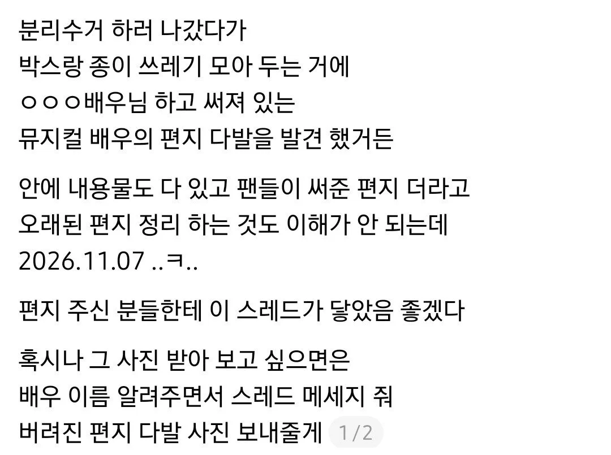
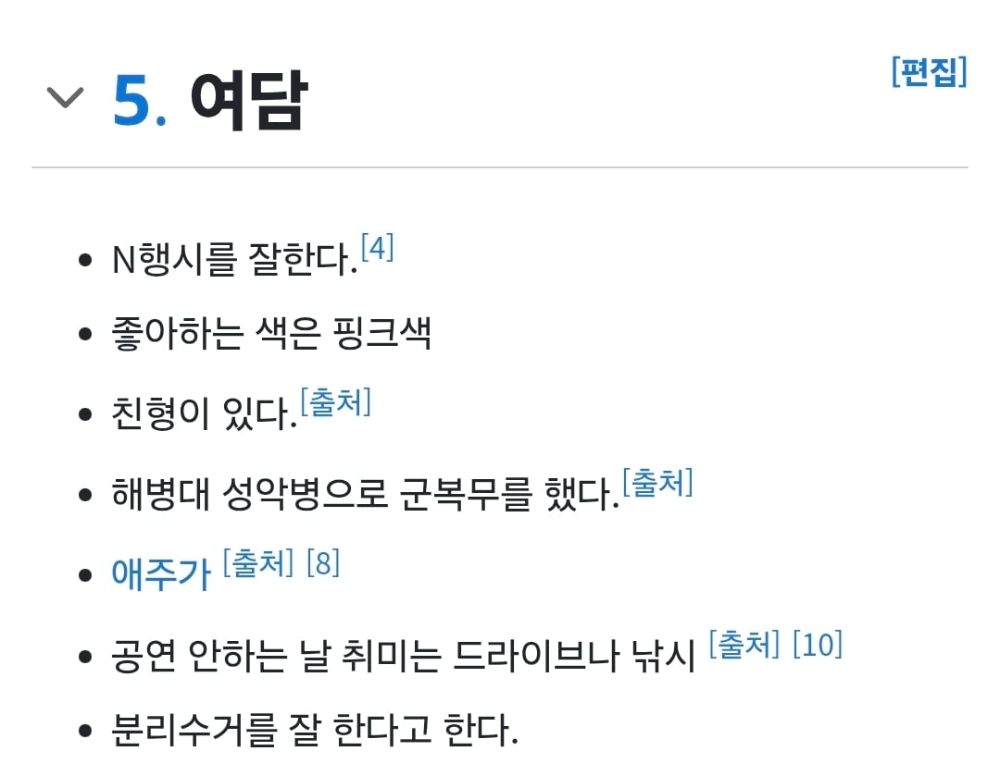

꺼무위키에는 분리수거 정말 잘하는 배우라고 사관들이 기록 남김


꺼무위키에는 분리수거 정말 잘하는 배우라고 사관들이 기록 남김
내가 만약 연예인이다? 솔까 저거 매번 다 어캐다읽음 내용도 다 비슷할거고 걍 나좋다 응원한다 사랑해요~힘내요 니덕에 내가 힘을얻엇다 어쩌고저쩌고 구구절절한사연도 포함되었을거고 등등 아 그래 고맙지..근데 연차좀 길고 오래한연예인이면 당연 받을땐 고맙다고 하고 읽어보겟다고 하는데 집에 그 수많은편지들 가져가서 솔직히 읽진않을거같다...버리기에도 골치아프고 큰박스같은거 하나 만들어서 그안에 담아둘듯..
딱히 소속사 없고 돈도 별로 없는 사람들은 집도 작을테니 선물로 방이 가득차서 이거저거 다 내다버려야할걸. 언젠가는 다 버려야함. 그냥 유사연예계 같은 활동하는 애들도 1년만 활동하면 각종 선물로 방이 가득참
그래서 결국은 버리거나 당근해야하지만 들키면 안됨